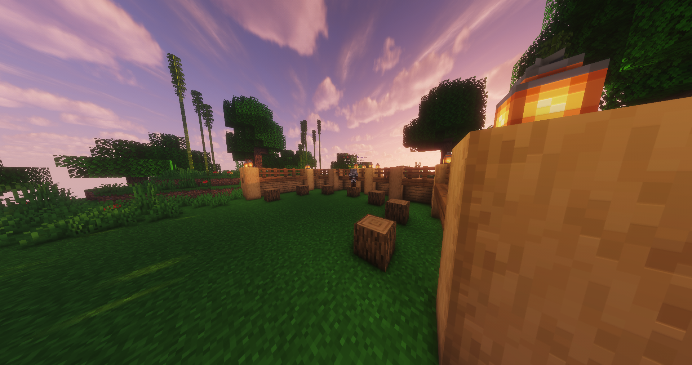

Rengeteg izgalmak várnak rád a CubeEmpire-ön.
Van itt minden!
Bedwars
Hungergames
Arenacraft ( saját fejlestésű játékmód )
És még sok más!
Ip cím: 127.0.0.0:25565 ( ajánlott 1.16.5 )
Elérhetőségek:
discord/cubeempire
cubeempire@gmail.com
Hogyan csatlakozz fel?
Elindítod a Minecraftot és belépsz
"többjátékos mód" és "server felvétel"
majd beírod az ip címet és kész.
Onnantól kezdve ha rámész a szerverre,
akkor be tudsz csatlakozzni.